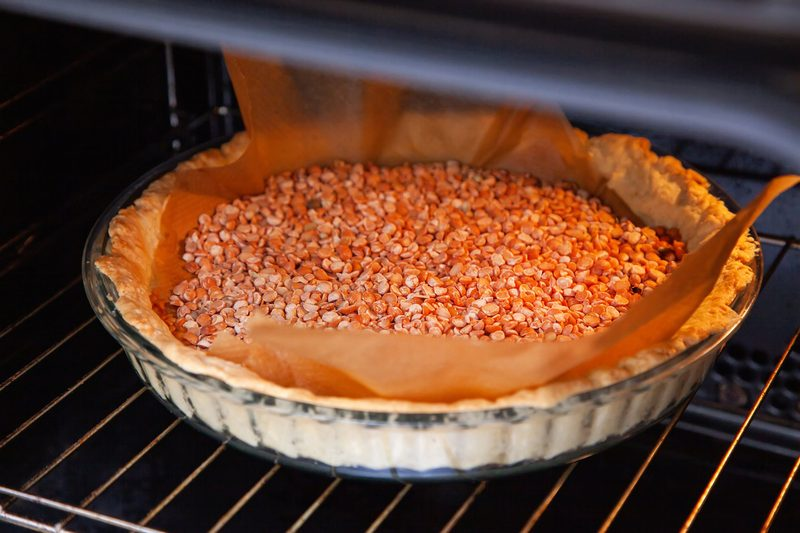
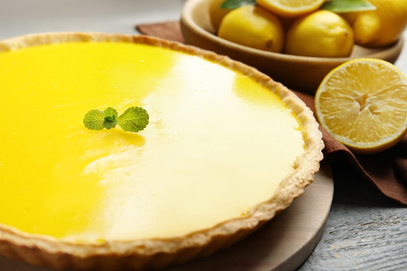
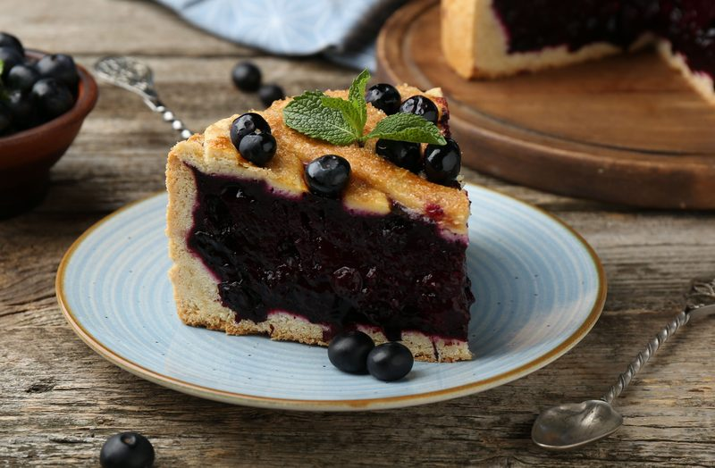
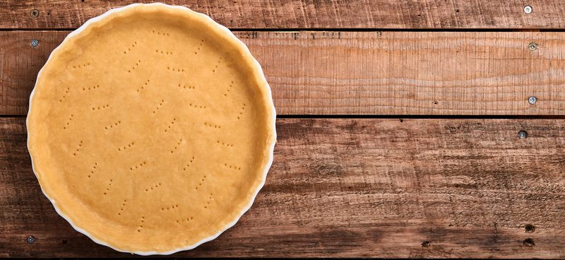

Par Bake vs Blind Bake (Plus the Crust We Use at the Bakery)
What par baking and blind baking actually mean, which one your pie needs, and the bakery crust that only needs 10 minutes, no pie weights.
Jump to recipe ↓- Blind baking means baking the crust empty, before any filling goes in. You can take it all the way or part of the way.
- Par baking is a partial blind bake. The crust goes in half done, then gets filled and baked again. Use it for wet fillings that bake in the crust: quiche, pumpkin pie, custard pie.
- Fully blind bake when the filling never goes in the oven: cream pies, lemon curd, chocolate ganache, fresh fruit tarts.
- Juicy fruit pies like blueberry and apple still need a short par bake. At the bakery our crust gets 10 minutes before the fruit goes in, or the bottom goes soggy.
People use these two words like they mean the same thing, and honestly they kind of do. Both mean the crust goes in the oven before the filling. The difference is how far you take it. And the one thing that decides it for you is the filling. Does it bake in the crust or not? Answer that and you know which one you need.
Blind baking is the technique. Par baking is how far you take it.
Why pre-bake a crust at all
A raw crust under a wet filling never gets the heat it needs. The filling sits on top like a cold blanket, the moisture soaks down, and you end up with a pale, gummy, soggy bottom. Baking the crust first sets the starches and fat, drives off some water, and gives you a crisp layer that the filling can't soak through. It also stops the sides from slumping down into the pan before they set.
Par bake: for fillings that bake in the crust
Par baking takes the crust about halfway. It's set, it's dry to the touch, it's barely starting to color, but it's not done. Then you fill it and both finish together. This is for wet, liquid fillings that need to bake but set faster than a raw crust can cook through.
- Quiche
- Pumpkin and sweet potato pie
- Custard and chess style pies
- Pecan style pies
How I do it: 375°F. Line the chilled crust with parchment, fill it to the top with pie weights or dry beans, and bake about 15 minutes until the edges are set. Pull the weights and parchment, bake another 5 minutes to dry out the bottom, then fill and finish.
Full blind bake: for fillings that never see the oven
If the filling goes in cold, the crust has to be 100% done before it gets filled. Nothing is going to finish it later.
- Cream pies (chocolate, banana, coconut)
- Lemon curd and lime tarts
- Chocolate ganache tarts
- Fresh fruit and pastry cream tarts
How I do it: same start, 375°F with parchment and weights for about 15 to 20 minutes. Then pull the weights and keep going another 10 to 15 minutes, until the bottom is golden and dry all the way across, not just the edges. Let it cool completely before you fill it, or you're just steaming it all over again.

Fruit pies need it too
A lot of recipes tell you to put apple or blueberry straight into a raw crust. But fruit lets out a lot of juice as it bakes, and all of it runs straight to the bottom. At the bakery our crust goes in for 10 minutes first, every time, especially for something wet like blueberry or apple. Then fill it, and bake it on the lowest rack so the bottom gets direct heat.

Cheat sheet
| Filling | Method | Crust when you fill it |
|---|---|---|
| Bakes in the crust, wet (quiche, pumpkin, custard) | Par bake | Set and dry, pale |
| Never baked (cream, curd, ganache, fresh fruit) | Full blind bake | Golden and fully done |
| Juicy fruit (apple, blueberry) | Short par bake, 10 min | Set and pale, low rack |
Tips from the bakery
- Chill before it goes in. A cold crust holds its shape. A warm one slumps the second the fat melts.
- Weights all the way to the top. Fill them right up to the rim so the sides are supported, not just the bottom.
- Dock the bottom. Prick it with a fork so steam can escape and the bottom doesn't puff up.
- Seal it. For a really wet filling, brush the par baked crust with a thin wash and give it 2 more minutes to set a barrier. My vegan egg wash replacements work great for this.
The crust we use at the bakery

Here's the thing. At the bakery we make pies and quiches all day, and we never mess with parchment and beans. Our crust goes in empty for 10 minutes, then we fill it. No gluten, so there's nothing to shrink back down the sides, and no weights needed. And the oat flour and starches set fast, so 10 minutes is all it takes to seal the bottom. This is our recipe, scaled down from the bakery batch to one 9-inch crust.
| Ingredient | Amount | Weight |
|---|---|---|
| Oat flour (certified gluten-free) | ¾ cup + 2 tbsp | 80 g |
| Rice flour | 3 tbsp | 27 g |
| Potato starch | 3 tbsp | 27 g |
| Tapioca flour | 2 tbsp | 18 g |
| Brown sugar | 1 tbsp, packed | 15 g |
| Xanthan gum | ¼ tsp | 1 g |
| Salt | ¼ tsp | 1.5 g |
| Vegan butter, cold, in chunks | ¼ cup | 57 g |
| Ice cold water | 3½ tbsp | 53 g |
- Whisk the oat flour, rice flour, potato starch, tapioca, brown sugar, xanthan and salt together.
- Add the butter cold and in chunks. Rub or cut it in until the biggest pieces are about the size of peas. Those cold pieces are your flaky layers, so don't let them melt.
- Add the ice cold water and mix just until it comes together into a dough.
- Flatten it into a disc, wrap it, and chill it for at least 30 minutes.
- Roll it out between two sheets of parchment and lay it into your pie pan.
- Baked filling (quiche, pumpkin, custard, blueberry, apple): bake it empty at 375°F for 10 minutes, no weights. Then fill it and bake as your filling recipe says. No-bake filling (cream, curd, ganache): bake it empty at 375°F for about 15 minutes until golden, cool completely, then fill.
Want a version with no butter at all? My 3-ingredient pie crust is pressed in, so it doesn't puff or shrink either.
So next time a recipe says blind bake, ask yourself one thing: is this filling going in the oven? If yes, par bake. If no, bake it all the way. Want more like this? Check out how to grease your pan like a pro baker and my apple spice pie.